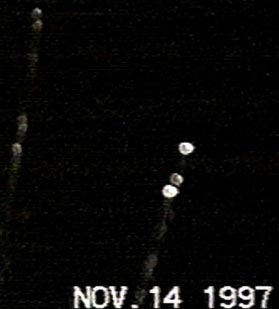

Les deux formations d'ovnis au-dessus de Seattle

Suite à une série d'observations, la FACH crée le CIFAE.
A Villambard (Dordogne), 1 témoin observe durant quelques
s 1 phénomène lumineux se déplaçant vers la terre à grande vitesse. Le phénomène est silencieux et de couleur
orangée La description du témoin laisse à penser que nous sommes en présence d'une rentrée atmosphérique qui a d'ailleurs été observée par d'autres témoinsSEPRA: PAN
classé B.
De nombreux témoignages signalent 2 formations linéaires d'ovnis au-dessus de l'amérique
du Nord-Ouest en général et particuliàrement au-dessus de Seattle. Les chaînes de télévision de la ville en font
leur Une.
A Roue (Alpes Maritimes), observation de 1 objet lumineux
faisant des cercles de 300 à 400 m de diamètre SEPRA: PAN
classé C.